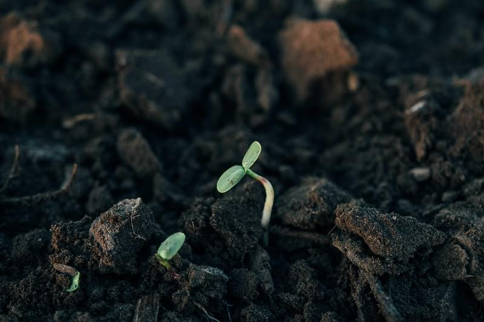
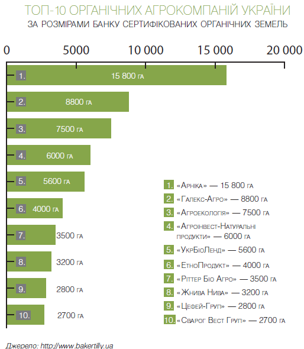
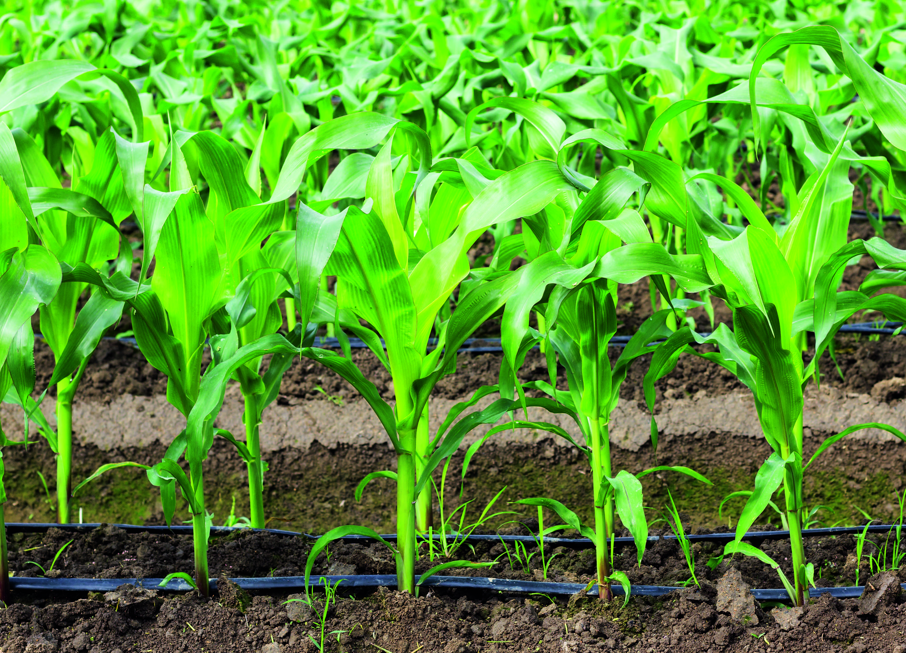
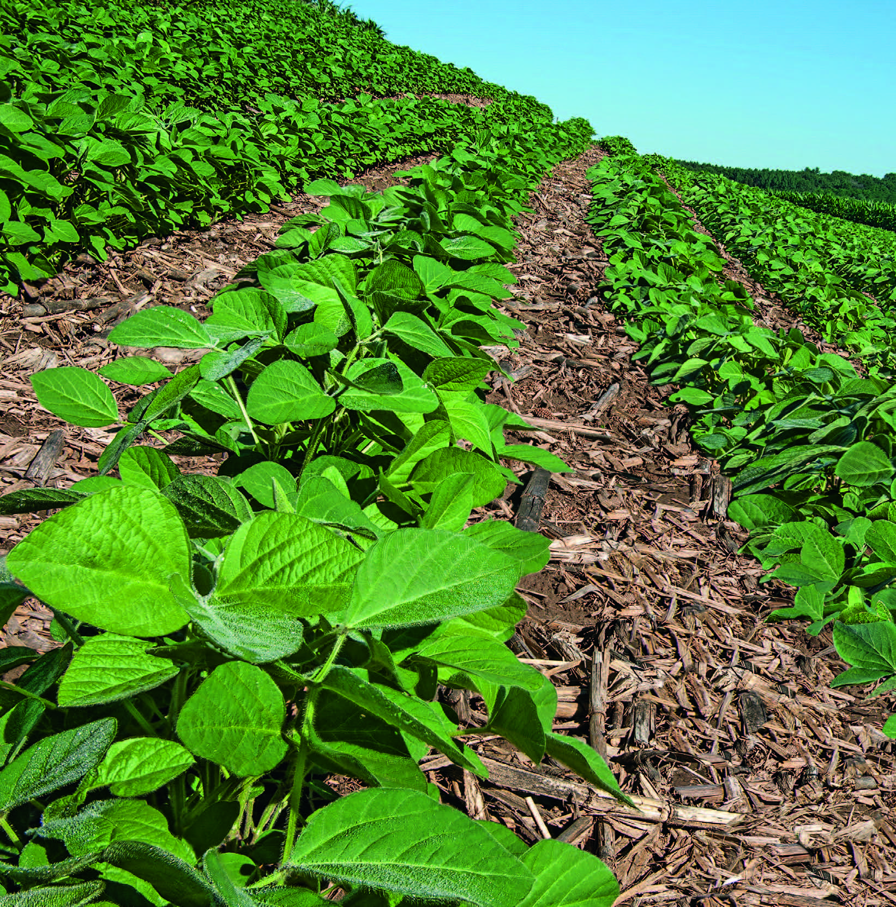
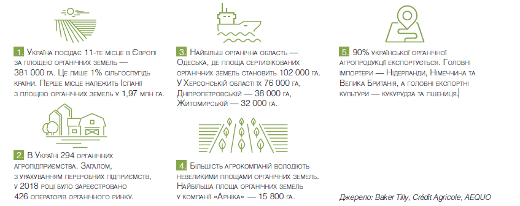

Технології органічного землеробства

Сучасне інтенсивне землеробство призвело до серйозних екологічних проблем. Агроекосистеми енерговитратні, слабоадаптивні, в них активно відбувається виснаження родючості ґрунтів.
Особливо критична ситуація склалася у зрошуваному овочівництві, оскільки ця галузь найбільш інтенсивна в рослинництві. Альтернативою є органічні методи землекористування. В органічному землеробстві ґрунт має бути покритим рослинністю або рослинними залишками максимально тривалий час.
ЗАГАЛЬНІ ТЕНДЕНЦІЇ
Відомо, що деякі технологічні прийоми і заходи можуть негативно вплинути на якість овочевої продукції, погіршити стан навколишнього середовища, зокрема знизити родючість ґрунту. Щоб цього уникнути, необхідно перейти від надмірної інтенсифікації до науково обґрунтованої біологізації, методів органічного землеробства (за європейською термінологією — «альтернативне землеробство», за американською — «поновлюване землеробство»).
Відомо, що деякі технологічні прийоми і заходи можуть негативно вплинути на якість овочевої продукції, погіршити стан навколишнього середовища, зокрема знизити родючість ґрунту. Щоб цього уникнути, необхідно перейти від надмірної інтенсифікації до науково обґрунтованої біологізації, методів органічного землеробства (за європейською термінологією — «альтернативне землеробство», за американською — «поновлюване землеробство»).
Тоді як закордоном ситуація зовсім інша. Наприклад, у США цей показник — всього 25%, в Угорщині — 37%, Франції, Німеччині та Канаді — 48%. Одним із шляхів зниження рівня розораності угідь є створення екозон в обсязі 10% з метою збереження природного біологічного різноманіття. Важливий елемент органічного вирощування овочевих рослин — використання спеціальних сівозмін. На зрошуваних землях сівозміни мають підбиратися від виду рослин, які сприяють збереженню родючості ґрунту і накопиченню поживних речовин, — проміжні сидеральні та ґрунтовкривні культури, насамперед багаторічні бобові трави.
ОРГАНІЧНА СІВОЗМІНА В ОВОЧІВНИЦТВІ ВКЛЮЧАЄ:
- бобові й ґрунтовкривні культури (30–50% площі) — джерело біологічно закріпленого азоту; а також для захисту ґрунту від ерозійних процесів;
- проміжні (сидеральні) культури — відновлення родючості ґрунту, пригнічення розвитку шкідників, хвороб, бур’янів;
- чергування культур — запобігання ґрунтовтоми
Причиною необхідності чергування культур у сівозміні є взаємодія рослин через ґрунт, чутливість їх до власних кореневих виділень, які накопичуються у ґрунті як інгібітори, але це не єдина причина ґрунтовтоми.
Інша, не менш важлива — накопичення у ґрунті збудників хвороб і шкідників, специфічних для кожного виду овочевих рослин, що ростуть на одному місці, а також одностороннє виснаження ґрунту на одні й ті ж самі елементи живлення.
СТАВКА НА ІНТЕРКРОПІНГ
Резервом збагачення ґрунту органічною речовиною, вуглецем та елементами живлення є заробка рослинних залишків (особливо соломи) та сидеральних добрив. За вмістом органічної речовини 1 т соломи еквівалентна 3–4 т гною. Подрібнена солома має бути не довше 10 см (щоб прискорити її мінералізацію). Для запобігання дефіциту азоту в ґрунті ефективна обробка соломи та інших рослинних залишків до їх заробки деструкторами стерні біологічного походження. Інтеркропінг — основа біологізованих сівозмін в овочівництві. Агроекосистеми, на відміну від природних еко-систем, слабоадаптивні. Філософія альтернативного (органічного) землеробства в овочівництві будується на створенні умов для саморегулювання та самопідтримки агроекосистеми.

Один із перспективних напрямів — введення у практику так званого інтеркропінгу (полікультури), що означає систему вирощування двох і більше видів рослин на одній і тій самій площі, тобто в одному рослинному співтоваристві. Управління таким співтовариством здійснюється спеціальними технологічними прийомами. Для цього розроблений мікросмуговий спосіб вирощування просапних культур, який призначений для захисту ґрунту від несприятливих факторів і створення інтеркропінгу (змішаних посівів).
Спосіб включає формування на площі залужених і незалужених смуг, вирощування в незалужених смугах овочевих рослин. Сумісність овочевих і ґрунтовкривних (для залуження) рослин попередньо визначається за допомогою спеціальних алелопатичних тестів. Такий спосіб вирощування в поєднанні з мульчуванням гарантує збереження і розширене відтворення родючості ґрунту, захист посівів від бур’янів, виробництво органічної овочевої продукції. Як ґрунтовкривні рослини частіше використовують злаково-бобові суміші.
ВИМОГИ ДО СОРТІВ В ОРГАНІЧНОМУ ОВОЧІВНИЦТВІ
- Максимальна адаптивність до місцевих ґрунтово-кліматичних умов
- Стійкість до біотичних і абіотичних факторів
- Високі смакові якості
- Наявність у плодових органах цінних біологічно активних речовин
Наявність у плодових органах цінних біологічно активних речовин
Посилення біологічної активності ґрунту відбувається за рахунок надходження додаткового енергетичного матеріалу з ґрунтовкривних рослин. При цьому зменшується амплітуда добових коливань температури ґрунту, посилюється виділення СО2 і розкладання клітковини, більше утворюється лабільного гумусу, збільшується кількість дощових черв’яків.
У разі запровадження на полі чорного пару терміном два роки поспіль популяція дощових черв’яків повністю гине через інтенсивний обробіток ґрунту та відсутність рослинного покриву. В залужених смугах накопичуються корисні комахи — ентомофаги, присутність яких серед овочевих рослин дозволяє контролювати чисельність шкідників.
Крім цього, деякі ґрунтовкривні рослини своїми виділеннями відлякують шкідників. Наприклад, чисельність кокцинелідів в умовах полікультури з томатом зростає, а заселеність жуками колорадськими — знижується. В органічному овочівництві використовують високоадаптивні сорти, які забезпечують стабільний, досить високий урожай навіть за несприятливих умов.
До таких сортів передусім належать місцеві сорти (мають вузьку адаптивність), а також деякі «старі» сорти, які завдяки широкій адаптивності набули поширення на всій території України й досі користуються попитом. Прикладом таких сортів можуть бути: капуста білоголова пізньостигла Харківська зимова, яка за комплексом господарсько-цінних ознак не поступається новим сортам, редис Рубін, морква Нантська харківська, перець гіркий Український, цибуля ріпчаста Золотиста, гарбуз Мозоліївський 15, кавун Мелітопольський 60 тощо.

ГІДРОСІВБА І КРАПЛИННЕ ЗРОШЕННЯ
Відповідно до технологій органічного землеробства, на поверхні ґрунту необхідно сформувати шар мульчі товщиною 5–7 см з рослинних залишків, змішаних із ґрунтом. Цей поверхневий шар накопичує вологу, зменшує її випаровування, не утворює поверхневої кірки, захищає ґрунт від вивітрювання та вимивання поживних речовин. Саме у такому шарі у присутності кисню і вологи працюють активатори ґрунту — мікроби, гриби, черви тощо. Поверхневий пористий шар виконує ще одну дуже важливу функцію — знижує температуру нижніх шарів ґрунту. Через різницю температур там конденсується волога й випадає роса (це природне краплинне зрошення).
Отже, в органічному землеробстві (подібно до природних ценозів) ґрунт має бути вкритим рослинністю або рослинними залишками максимально тривалий час. Під час вирощування овочевих рослин за органічними технологіями перспективним є застосування способу гідросівби.
Такий спосіб гідросівби забезпечує наближення польової схожості насіння до рівня лабораторної, зменшення норми висіву насіння у півтора-два рази, використання підчас сівби рідких органічних добрив, біологічних засобів захисту рослин, мікроелементів тощо.
| АГРОФІЗИЧНІ ВЛАСТИВОСТІ ГРУНТУ ЗА РІЗНИХ СПОСОБІВ ВИРЩУВАННЯ | ||||||
|---|---|---|---|---|---|---|
| Спосіб | Водопроникність за першу годину, мм | Об'ємна маса, г/м | Твердість кг/см | Агрономічно цінні агрегати, % | Коефіцієнт структурності | Коефіцієнт водостійкості |
| Інтенсивний | 190 | 1,27 | 23 | 60 | 1,5 | 0,29 |
| Смуговий | 326 | 1,18 | 19 | 72 | 2,8 | 0,39 |
Сходи з’являються через п’ять-сім діб після сівби (за звичайного способу — через 12–21 добу), раніше бур’янів, що забезпечує прирости врожаю. Крім того, для виробництва органічної овочевої продукції найбільш придатний краплинний спосіб зрошення, який дає економію поливної води й добрив до 50% і забезпечує збереження родючості ґрунту.
Ми розробили елементи біологічної системи захисту овочевих рослин від шкідників і хвороб. Окремі елементи цієї системи можна використовувати у процесі вирощування овочевих рослин в органічному землеробстві, де перспективним напрямом є збільшення чисельності природних ентомофагів (яке досягається шляхом підсіву нектароносних рослин для створення квіткового конвеєра протягом усього вегетаційного періоду).
ВИДИ ОБРОБІТКУ ҐРУНТУ В ОРГАНІЧНОМУ ЗЕМЛЕРОБСТВІ
- Мульчувальний (5–7 см) з рослинних залишків, змішаних із ґрунтом, що забезпечує накопичення вологи та поживних речовин, відсутність ґрунтової кірки, посилення активності ґрунтової біоти тощо
- Локальний — обробіток ґрунту смугами певної глибини і ширини, що забезпечує енергозбереження та збереження родючості ґрунту
- Нульовий (основний) — біологічне розпушування та оструктурення ґрунту
- Комбінований — поєднання технологічних операцій за один прохід агрегату

ЗАХОДИ ЗАХИСТУ ПОСІВІВ ВІД БУР’ЯНІВ
- Введення до сівозміни проміжних і високоедифікаторних рослин (жито та пшениця озимі, трави багаторічні та однорічні, гречка, капуста, гарбуз, кабачок тощо), які пригнічують бур’яни
- Алелопатичне прополювання посівів
- Касетно-розсадний спосіб вирощування овочевих і баштанних рослин
- Гідросівба
- Мульчування поверхні ґрунту різними матеріалами
